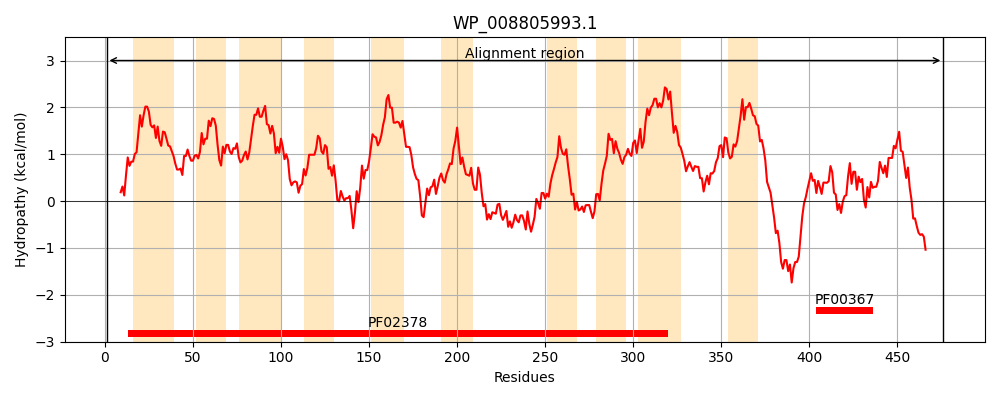
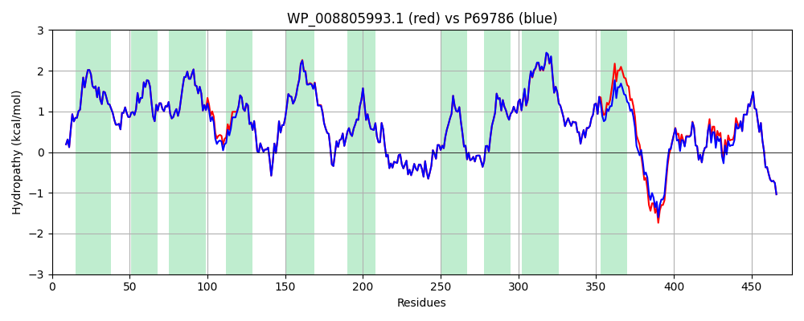

Hit Accession: P69786
Hit TCID: 4.A.1.1.1
Hit Description: gnl|BL_ORD_ID|11274 gnl|TC-DB|P69786|4.A.1.1.1 PTS system glucose-specific EIICB component - Escherichia coli.
Mach Len: 476
e:0.000000
Query TMS Count : 10
Hit TMS Count: 10
TMS-Overlap Score: 10.150000
Predicted Substrates:CHEBI:4167;D-glucopyranose
BLAST Alignment:
Score: 2377 , Bit scores: 920 bits, E-value: 0.0e+00, Alignment length: 476, Percentage identity: 97
Query: 1 MFKNAFANLQKVGKSLMLPVSVLPIAGILLGVGSANFSWLPAVVSHVMAEAGGSVFANMPLIFAIGVALGFTNNDGVSALAAVVAYGIMVKTMAVVAPLVLHLPAEEIAAKHLADTGVLGGIISGAIAAYMFNRFYRIKLPEYLGFFAGKRFVPIISGLAAIFTGVILSFIWPPIGSAIQTFSQWAAYQNPVVAFGIYGFIERCLVPFGLHHIWNVPFQMQIGEYTNAAGQVFHGDIPRYMAGDPTAGKLSGGFLFKMYGLPAAAIAIWHSAKPENRAKVGGIMISAALTSFLTGITEPIEFSFMFVAPILYVIHAILAGLAFPICILLGMRDGTSFSHGLIDFIVLSGNSSKLWLFPIVGICYAIVYYVIFRVLIKALDLKTPGREDTTEESKAGATSEMAPALIAAFGGKENITNLDACITRLRVSVADVAKVDQAGLKKLGAAGVVVAGSGVQAIFGTKSDNLKTEMDEYIRN 476
MFKNAFANLQKVGKSLMLPVSVLPIAGILLGVGSANFSWLPAVVSHVMAEAGGSVFANMPLIFAIGVALGFTNNDGVSALAAVVAYGIMVKTMAVVAPLVLHLPAEEIA+KHLADTGVLGGIISGAIAAYMFNRFYRIKLPEYLGFFAGKRFVPIISGLAAIFTGV+LSFIWPPIGSAIQTFSQWAAYQNPVVAFGIYGFIERCLVPFGLHHIWNVPFQMQIGEYTNAAGQVFHGDIPRYMAGDPTAGKLSGGFLFKMYGLPAAAIAIWHSAKPENRAKVGGIMISAALTSFLTGITEPIEFSFMFVAPILY+IHAILAGLAFPICILLGMRDGTSFSHGLIDFIVLSGNSSKLWLFPIVGI YAIVYY IFRVLIKALDLKTPGRED TE++KA TSEMAPAL+AAFGGKENITNLDACITRLRVSVADV+KVDQAGLKKLGAAGVVVAGSGVQAIFGTKSDNLKTEMDEYIRN
Sbjct: 1 MFKNAFANLQKVGKSLMLPVSVLPIAGILLGVGSANFSWLPAVVSHVMAEAGGSVFANMPLIFAIGVALGFTNNDGVSALAAVVAYGIMVKTMAVVAPLVLHLPAEEIASKHLADTGVLGGIISGAIAAYMFNRFYRIKLPEYLGFFAGKRFVPIISGLAAIFTGVVLSFIWPPIGSAIQTFSQWAAYQNPVVAFGIYGFIERCLVPFGLHHIWNVPFQMQIGEYTNAAGQVFHGDIPRYMAGDPTAGKLSGGFLFKMYGLPAAAIAIWHSAKPENRAKVGGIMISAALTSFLTGITEPIEFSFMFVAPILYIIHAILAGLAFPICILLGMRDGTSFSHGLIDFIVLSGNSSKLWLFPIVGIGYAIVYYTIFRVLIKALDLKTPGREDATEDAKATGTSEMAPALVAAFGGKENITNLDACITRLRVSVADVSKVDQAGLKKLGAAGVVVAGSGVQAIFGTKSDNLKTEMDEYIRN 476 | Protein Hydropathy Plots: |
|---|
|  |  |
Pairwise Alignment-Hydropathy Plot:
|
|---|
|  |